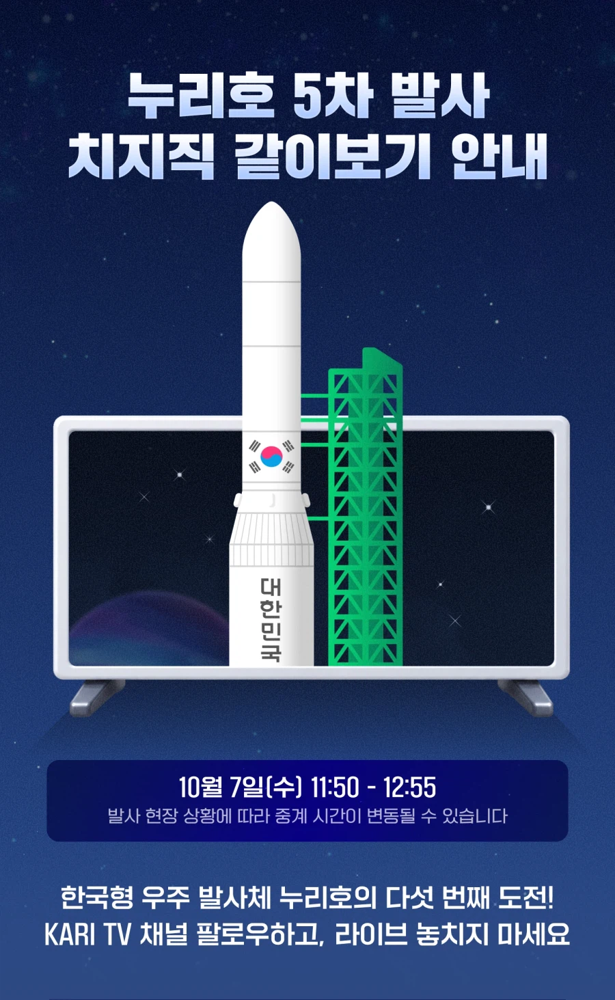
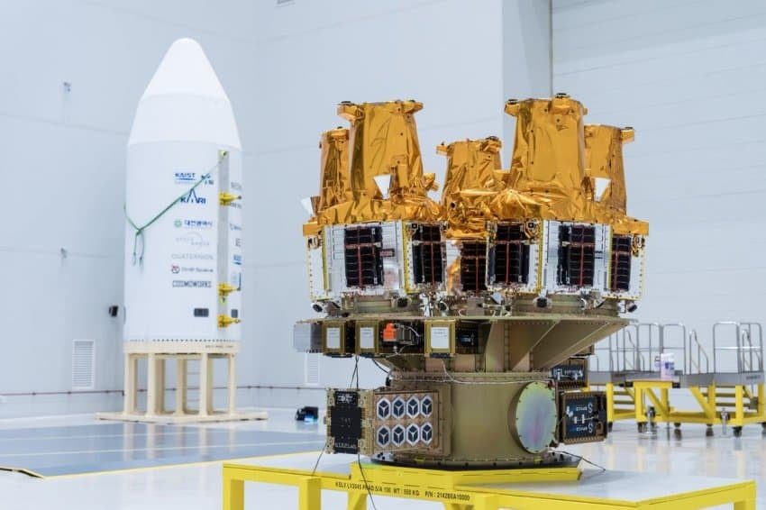
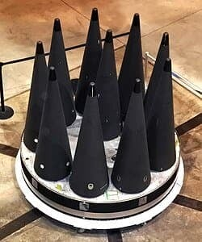

금일 예정된 누리호 5차 발사체에 들어가는 인공위성들인데..
이거 아무리 봐도...
.
.
.
.
.
.
.
.
.
.
.
.

에이 설마..예행연습 아니지?


금일 예정된 누리호 5차 발사체에 들어가는 인공위성들인데..
이거 아무리 봐도...
.
.
.
.
.
.
.
.
.
.
.
.

에이 설마..예행연습 아니지?
어허
그렇게 말씀하시면 안 되구
눈치없어 ㅂㅁ
그냥 저 형태가 효율적인거 뿐이야....
'지구를 향합니다'
물체만바꾸면 됨 ㅇㅇ
위성 자리에 (핵)연료 좀 채울게요~
한국 화약 회사가 그럼 무기라도 만든다는 소리냐
그럼 화약회사가 뭘만들수있는건데
불꽃놀이 이 바보야!!!!
대한민국 국민의 마음을 이롭게 하는 불꽃놀이 회사를 의심 한단 말이냐!
남조선폭파집단이 무슨 무기를 만든다 해!
어허
너 때문에 한국 전쟁 무기 계획이 5억년 뒤쳐졌다 책임져
그냥 저 형태가 정지궤도에 위성 사출하기 좋은 거임..
곡해하지 마라
눈치 챙겨
mirv
어허!!!
눈치챙겨
???:그렇게 말하면 안되고..
절대 그렇게 말씀하시면 안되시구
어허 고위도 다탄두라니요. 다중위성 발사입니다,
딱 봐도 관상 자체가 절대 연구만 할 예정인 과학위성이네 누명 씌우지 말라
학생 글 내려
ㅋㅋㅋㅋㅋㅋㅋ
저 작은 깔때기 하나 하나가 리틀보이 수십배 위력이라니..
백날 만들면 뭐하냐 지뢰 밟아도 사과 요구나 겨우 하는 마당에
위에는 못 쏘고 다른 나라에 쏠 작정일지도 ㅋㅋ
남조선 폭파 집단이 움직였다
착탄 t-100
잠수함 엔진 뜯어서 꼭대기에 장착하면 되는거지?
어허 그런거 아니야
그럼 위성을 떼 버릴 추진제 뒤쪽이나 중간에 장착하란 말이냐? 지뢰 매설부터 들이 받고 핵 응징은 그 다음 얘기다
어머나 MIRV용 PBV 키트잖아!!
저 위성 중량이 얼마나 되는지 알면
예상되는 탄두의 파괴력도 바로 계산되겠네 ㄷㄷㄷ
저거 분리할때 회전에너지로 분리된다는 이야기를 들은 것 같은데
탄두가 회전하면 낙하할 때 속도도 빨라지는.....ㄷㄷㄷㄷ
눈치 챙겨